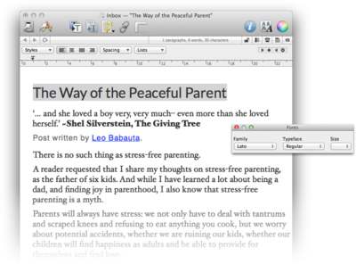

|
The view for plain and rich text documents is basically a built-in incarnation of TextEdit, and you use it in a very similar fashion. Of course, text views support the
Edit > Find
commands and all options of the
Format
menu.

The ruler
For rich text documents, DEVONthink Pro Office supports the standard ruler that the TextEdit engine of Mac OS X provides. Show or hide it with
Format > Ruler > Show/Hide Ruler.
The ruler contains the following elements:
-
Tab Stops: Place tab stops with the mouse, then remove them by dragging them off the ruler. Drag new tab stops (left aligned, centered, right aligned, or decimal aligned) from the repository at the right side to their desired positions on the ruler. Use the mouse to adjust the left and right margins and indent.
-
Styles: Select a predefined text style from the pop-up menu. To define your own styles, choose Other to open the Mac OS X standard style editor. In the style editor, navigate back and forth through the styles of your document or the stored favorite styles. (Use the radio buttons to switch between document and favorite styles.) Click Select to select all occurences of text with the displayed style in the document, click Apply to apply the style to selected text, or click Done to leave the style editor. To add a style from your document to Favorites, click Add To Favorites; to remove a favorite, click Remove From Favorites.
-
Alignment: Align the current paragraph (the one with the insertion caret inside) left, centered, justified, or right by clicking the according alignment buttons in the ruler.
-
Spacing: Choose the desired spacing for the current paragraph from the Spacing pop-up menu. Choose Other to enter values other than the ones shown.
-
Lists: Make the current paragraph a list (indented and with a bullet or numbered) by choosing the desired list style from the Lists pop-up menu. Choose Other to define your own list style.
|
Note: The built-in "mini outliner" is an nice feature. On any blank line in a rich text document (doesn't work for plain texts), type ⌥⇥ to create a bullet point (Mac OS X shows dashes instead of bullets). Press ↩ for the next item, and so on. Additional ⌥⇥ will increase the indentation; a ↩ on a blank list line will decrease it. The mini outliner uses hyphens to indicate list items by default. Right-click to choose all kinds of list styles.
|
Attachments
You can attach other documents to rich text documents simply by dragging them into the text. Technically the rich text document becomes a .rtfd package and the dragged file is saved as part of the package. Drag items into plain texts with ⌘Command and ⌥Option pressed to insert only their titles.
- Use the contextual menu to show an attachment's content in a Quick Look preview.
- Double-click attachments to edit them externally.
|
Note: Editing attachments requires OS X 10.7 Lion or higher. Also, you cannot attach files to plain text documents. You need to convert them to rich text before you can attach other files.
|
Drag-and-drop
Besides dragging text from and to text documents you can also drag the following:
-
Files: Adds the file as an attachment to a rich text document. Hold ⌘Command and ⌥Option to insert only a link to the file.
-
Contact cards: Drag a card from Contacts holding ⌘Command and ⌥Option to insert a link to the card.
-
Calendar event: Drag a Calendar event to insert a short text summary of the event including a link to Calendar.
Toolbar & shortcuts
The document windows toolbar is very similar to the one in DEVONthink Pro Office main windows, yet can be configured separately.
Please find a list of shortcuts in the appendix. Read more...
Contextual menu
-
Add Link: Makes the selected piece of text a WikiLink. The destination of the WikiLink is a document with the same name as the selected text. If no document with that name exists, clicking the created link creates it using the template you have set in the Editing Preferences.
-
Add tag [word]: Tags the document with the selected word (only available if the word is not already a tag of the document).
-
Copy Link: Copies a link to the Clipboard (only available for selected links).
-
Edit Link: Edits the destination of a selected link.
-
Highlight: Highlights the selected piece of text with the color you select in the sub-menu.
-
Insert Link To: Inserts a link to an item you select in the sub-menu (only available when no text is selected).
-
Insert: Inserts special elements into the text (such as a page break, the current date or a bullet). Same as the Insert sub-menu of the
Edit menu
.
-
Link To: Makes the selected piece of text a cross-link and links it directly to the group or document you select in the sub-menu.
-
Look Up [word]: Looks the selected text up in Mac OS X's Dictionary.
-
Open Alias: Follows a selected link (only available for a selected Wiki-style link resolved by an alias). Aliases are defined for each item separately in the Info panel.
-
Open Link in Browser: Opens the selected link in the default browser or application (only available for a selected link).
-
Open Link in New Tab: Opens the selected link in a new tab.
-
Quick Look Attachment: Opens a Quick Look panel for the selected attached link or file (OS X 10.7 Lion or higher).
-
Remove Link: Makes a selected link simple text.
-
Search selected phrase: Searches for the selected text as a phrase.
-
Search with Google: Opens your default browser and searches for the selected text in Google.
-
Search with Spotlight: Searches for the selected text using Spotlight.
-
See [word]: Opens a drawer with documents related to the selected word.
-
See Related Text: Opens a drawer with documents related to the selected text passage (only available when more than one word is selected).
-
Set Name As: Renames the document according to the selected piece of text (needs to be less than 256 characters).
-
Split Document: Splits the document at the current insertion mark position.
|